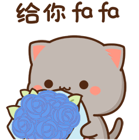

Open This Box😉

Hii, You😁
Happy Anniversary Varsu 💕🎉
My wish on this special moment is that we can stay together and always share the same goals ❤️
Happy Anniversary to Us❤️😉
5 Beautiful Years Together✨
I Love You Forever❤️
I just want to say..
First of all, thank you for sticking with me 🤭
Thank you also for accepting me as I am 🥺
Even though we often quarrel,
But I still love you 😍
Today is…
as beautiful as other days
but today… feels a little more special,
bcz it’s all about *us*… about *you & me*… 🥰
Our day… our moments… our story 💞
Let’s make this anniversary truly epic —
the kind of day we’ll look back on and think, “haan, ye din sach me khubsurat tha” 🚀
Wishing us more joy… more laughter… more peace…
and more reasons to hold each other a little tighter 😄
Keep believing… keep shining 💪💖
Because with you, every step feels special 🕊️🌤️
even the simplest moments turn magical when you’re beside me 🕊️🌤️
The best chapters of our journey… 📖
They’re just beginning 🌟
Let’s make memories… the kind we never forget 📸
I can’t wait to live the rest of my life discovering new memories with you 🌟
God’s blessings always stay with us 🙏💛
Aur haan lastly…
Thodi si overthinking kam karo na… 😅
haan mujhe pata hai, main kabhi-kabhi jaane-anjaane me choti-moti galtiyan kar bethta hoon…
But at the end, hu to tumhara hi na… 😅
And no matter what…
I'm always choosing you — every day, every moment, without a second thought ✨
So smile a little… let’s end this day with a promise ki hum dono saath me hi grow karenge 💞
Click LOVE on the left side!
Click to Continue